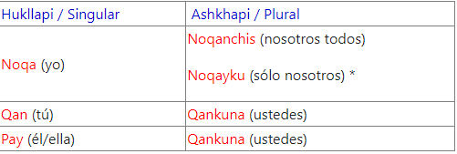

Desde el año 2000, la Unesco proclamó el 21 de febrero como el Día Internacional de la Lengua Materna para promover la diversidad lingüística, la educación multilingüe e incentivar en todas las sociedades un mejor conocimiento de las tradiciones culturales. Este 21 de febrero se celebra el Día Internacional de la Lengua Materna, proclamado por la Organización de Naciones Unidas para la Educación, la Ciencia y la Cultura (Unesco, por su sigla en inglés) en pro de preservar y desarrollar los idiomas maternos y, por ende, la identidad cultural de los pueblos. En el continente americano esta fecha tiene una connotación importante, puesto que solo en esta zona del mundo se albergan un total de 1060 lenguas, de las cuales el 64 por ciento está en peligro de extinción. "Con motivo de este Día, hago un llamamiento para que el potencial de la educación plurilingüe se reconozca en el mundo entero, en los sistemas educativos y administrativos, en las expresiones culturales y en los medios de comunicación, en el ciberespacio y en los intercambios comerciales", manifestó Irina Bokova, directora General de la Unesco
Desde el año 2000, la Unesco proclamó el 21 de febrero como el Día Internacional de la Lengua Materna para promover la diversidad lingüística, la educación multilingüe e incentivar en todas las sociedades un mejor conocimiento de las tradiciones culturales. Este 21 de febrero se celebra el Día Internacional de la Lengua Materna, proclamado por la Organización de Naciones Unidas para la Educación, la Ciencia y la Cultura (Unesco, por su sigla en inglés) en pro de preservar y desarrollar los idiomas maternos y, por ende, la identidad cultural de los pueblos. En el continente americano esta fecha tiene una connotación importante, puesto que solo en esta zona del mundo se albergan un total de 1060 lenguas, de las cuales el 64 por ciento está en peligro de extinción. "Con motivo de este Día, hago un llamamiento para que el potencial de la educación plurilingüe se reconozca en el mundo entero, en los sistemas educativos y administrativos, en las expresiones culturales y en los medios de comunicación, en el ciberespacio y en los intercambios comerciales", manifestó Irina Bokova, directora General de la Unesco

Hanllallikuna / Vocales:A, E, O, I, U
Kunkawakikuna /Consonantes:H, L, Ll, M, N, Ñ, R, S, W, Y CH, K, P, T, Q
Sonidos Aspirados: CHH, KH, PH, TH, QH
Sonidos Explosivos o Fuertes:Ch’, K’, P’, T’, Q’ br
KRDÑIYDD CHRNINCHRD /Adjetivos Posesivos
Como el nombre lo indica los adjetivos posesivos indican pertenencia, en el Quechua se agregan sufijos para indicar que algo nos pertenece:
1ª personase agrega: y
2ª personase agrega: yki
3ª personase agrega: n
Ejemplos:
1ª persona Wasiy (mi casa)
2ª persona Wasiyki (tu casa)
3ª persona Wasin (su casa)
En Quechua, todos los verbos terminan con “y”, para conjugar se elimina esta última letra y se agregan las siguientes terminaciones, a continuación verás un ejemplo conjugado con el verbo “Takiy” que significa “cantar”.
Noqa ….ni Noqa takini (yo canto)
Qan ….nki Qan takinki (tú cantas)
Pay ….n Pay takin (él/ella canta)
Noqanchis ….nchis Noqanchis takinchis (nosotros cantamos)
Noqayku ….yku Noqayku takiyku (nosotros cantamos)
Qankuna ….nkichis Qankuna takinkichis (ustedes cantan)
Paykuna ….nku Paykuna takinku (ellos cantan)